click here for the R script to follow along
This code demo comes from the Quebec Centre for Biodiversity Science. The data can be downloaded here.
#install.packages("mgcv")
library(ggplot2)## Warning: package 'ggplot2' was built under R version 4.5.2library(mgcv)Data comes from an ocean bioluminescence dataset. The dataset is comprised of bioluminescence levels (Sources) in relation to depth, seasons, and different stations.
isit <- read.csv("ISIT.csv")
#focusing on Season 2 to start
isit2 <- subset(isit, Season == 2)
head(isit2)## SampleDepth Sources Station Time Latitude Longitude Xkm Ykm Month
## 127 1305 33.91 6 2 49.2672 -13.4825 37.488 -81.453 8
## 128 1355 33.59 6 2 49.2672 -13.4825 37.488 -81.453 8
## 129 1257 32.30 6 2 49.2672 -13.4825 37.488 -81.453 8
## 130 1208 29.71 6 2 49.2672 -13.4825 37.488 -81.453 8
## 131 1750 20.02 6 2 49.2672 -13.4825 37.488 -81.453 8
## 132 718 19.49 6 2 49.2672 -13.4825 37.488 -81.453 8
## Year BottomDepth Season Discovery RelativeDepth
## 127 2001 4020 2 255 2715
## 128 2001 4020 2 255 2665
## 129 2001 4020 2 255 2763
## 130 2001 4020 2 255 2812
## 131 2001 4020 2 255 2270
## 132 2001 4020 2 255 3302Before we even look at what this data looks like, let’s try to fit a model to it based on some understanding of how bioluminesce may work. I hypothesize that Bioluminescence (Sources) will change significantly with Depth (SampleDepth) since more organisms would use bioluminesce in deeper, darker water. We can try fitting a linear regression based on this idea to start off with. Notice that we can do this with the “gam()” function in “mgcv,” and it will work the same way as if we were using “lm()”.
linear_model <- gam(Sources ~ SampleDepth, data = isit2)
summary(linear_model)##
## Family: gaussian
## Link function: identity
##
## Formula:
## Sources ~ SampleDepth
##
## Parametric coefficients:
## Estimate Std. Error t value Pr(>|t|)
## (Intercept) 30.9021874 0.7963891 38.80 <2e-16 ***
## SampleDepth -0.0083450 0.0003283 -25.42 <2e-16 ***
## ---
## Signif. codes: 0 '***' 0.001 '**' 0.01 '*' 0.05 '.' 0.1 ' ' 1
##
##
## R-sq.(adj) = 0.588 Deviance explained = 58.9%
## GCV = 60.19 Scale est. = 59.924 n = 453We did it! We’ve created a model which has a high R-squared, and a significant p-value! Okay we can stop here, right?
But wait, how does it look?
data_plot <- ggplot(data = isit2, aes(y = Sources, x = SampleDepth)) +
geom_point() + geom_line(aes(y = fitted(linear_model)), colour = "red",
linewidth = 1.2) + theme_bw()
data_plot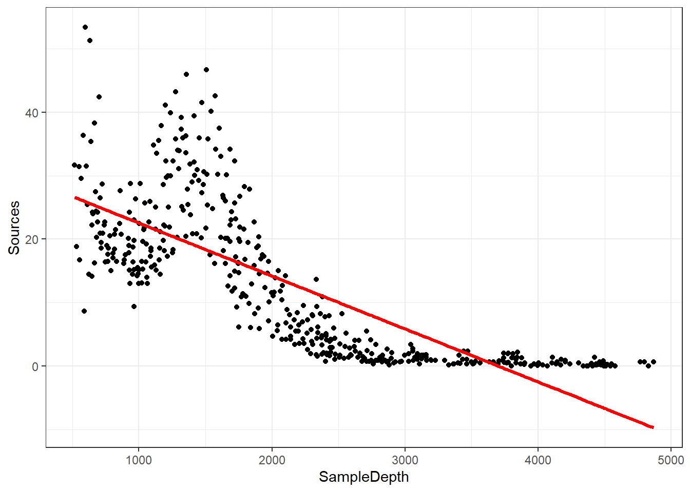
We are violating the assumptions of the linear model:
So our data is “curvy” but our linear model is not.
There are ways that you could expand this linear model to fit a more curvy dataset by using a polynomial regression. However, the fit of the model would be explicitly determined by the modeler’s decisions and could become difficult to work with.
A big advantage of using an additive model like a GAM is that the fitting method usually uses maximum likelihood to automatically determine the optimal shape of the curved fit of non-linear responses for us.
GAMs are effectively a nonparametric form of regression where instead of the linear function, \[ Y_i \sim B_0 + \beta_1x_i + \epsilon_i \] our function becomes,
\[ Y_i \sim f(x_i) + \epsilon_i \] where y is locally predicted by a smooth function of the x variable. Instead of having a fixed coefficient for our explanatory variables, the smooth function is non-linear and local, allowing for the magnitude (coefficient) of our explanatory variable to vary over its range, depending on the relationship between the variable and the response.
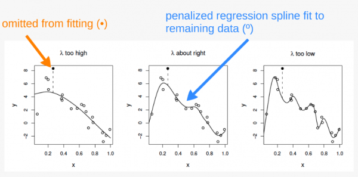
The “curviness” of our function is controlled using a penalized regression determined automatically in mgcv. The default method for this in mgcv is generalized cross-validation (GCV). The GCV method creates a “GCV score” which gets used for smoothness selection; the goal of which is to minimize prediction error. However, this method can suffer from “under-smoothing” and cause a fit that is too wiggly, or over-fit, especially with small sample sizes.
We are using the Restricted Maximum Likelihood (REML) method instead in our model. REML has been shown to be much more robust to under-smoothing, providing less biased estimates of variance components. Other methods are detailed in ?gam.
?mgcv::gam## starting httpd help server ... doneAdditionally, the “basis” bs() argument has a number of options for how the smooth function works which are detailed in the smooth.terms help page in mgcv. The default for this argument is ‘tp’ for a thin plate spline. The most commonly used options for this argument are ‘tp’, ‘cr’ (cubic regression spline), and ‘ps’ (P-spline).
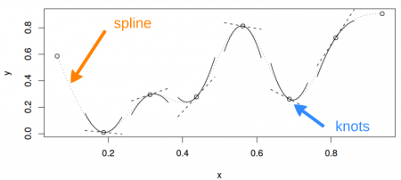
?smooth.termsLet’s fit it as a GAM to see how that affects the way our model fits. The formula is really simple!
gam_model <- gam(Sources ~ s(SampleDepth), bs = 'tp', method = "REML", data = isit2) #s() is the smooth termLet’s look at it on the graph and compare it to our linear model that we created, too.
data_plot <- data_plot + geom_line(aes(y = fitted(gam_model)),
colour = "blue", linewidth = 1.2)
data_plot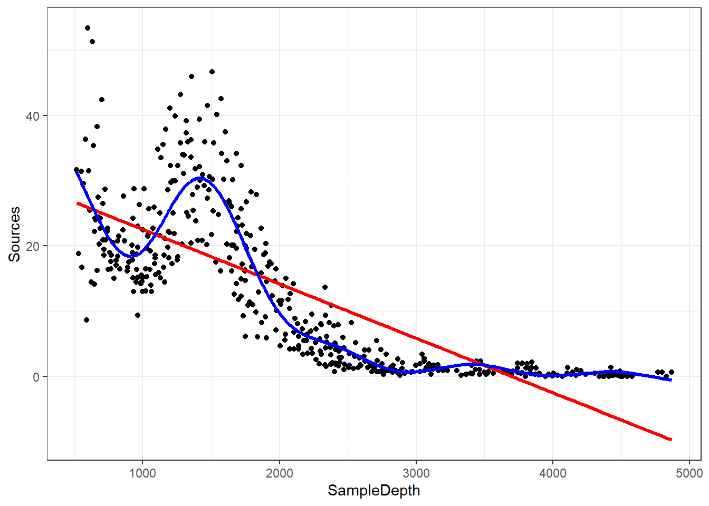
Our GAM model is now fitting the data much better than the linear model.
You can also plot it within the mgcv package
plot(gam_model)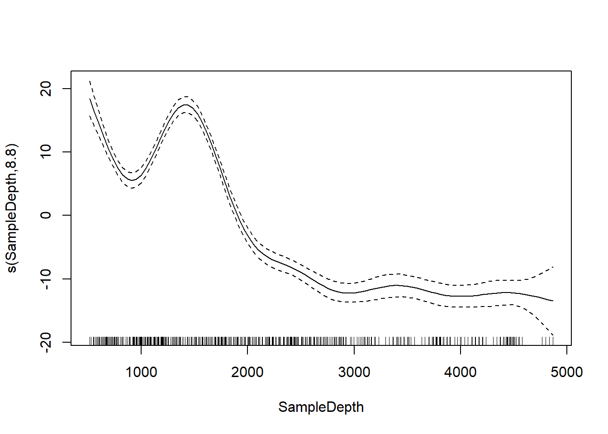
We can compare our linear model and our GAM with AIC and see that there’s a big difference.
linear_model <- gam(Sources ~ SampleDepth, data = isit2)
smooth_model <- gam(Sources ~ s(SampleDepth), data = isit2)
AIC(linear_model, smooth_model)## df AIC
## linear_model 3.00000 3143.720
## smooth_model 10.90825 2801.451What if we want to use linear AND smoothed terms in our model?
Let’s look at our dataset again.
head(isit)## SampleDepth Sources Station Time Latitude Longitude Xkm Ykm Month Year
## 1 517 28.73 1 3 50.1508 -14.4792 -34.106 16.779 4 2001
## 2 582 27.90 1 3 50.1508 -14.4792 -34.106 16.779 4 2001
## 3 547 23.44 1 3 50.1508 -14.4792 -34.106 16.779 4 2001
## 4 614 18.33 1 3 50.1508 -14.4792 -34.106 16.779 4 2001
## 5 1068 12.38 1 3 50.1508 -14.4792 -34.106 16.779 4 2001
## 6 1005 11.23 1 3 50.1508 -14.4792 -34.106 16.779 4 2001
## BottomDepth Season Discovery RelativeDepth
## 1 3939 1 252 3422
## 2 3939 1 252 3357
## 3 3939 1 252 3392
## 4 3939 1 252 3325
## 5 3939 1 252 2871
## 6 3939 1 252 2934Instead of subsetting by Season, lets treat Season as a factorial covariate.
isit$Season <- as.factor(isit$Season)
levels(isit$Season)## [1] "1" "2"Now lets add Season to our previous gam model as a categorical variable with two levels.
basic_model <- gam(Sources ~ Season + s(SampleDepth), data = isit,
method = "REML") # notice the s() for SampleDepth, but not for Season
basic_summary <- summary(basic_model)Instead of showing the full summary, I’ll simplify things by showing the linear effects and smooth effects separately. Here is the linear effects table.
basic_summary$p.table## Estimate Std. Error t value Pr(>|t|)
## (Intercept) 7.253273 0.3612666 20.07734 1.430234e-72
## Season2 6.156130 0.4825491 12.75752 5.525673e-34And here is the smooth effects table.
basic_summary$s.table## edf Ref.df F p-value
## s(SampleDepth) 8.706426 8.975172 184.3583 0The most important thing to look at in this table is the EDF or
Effective Degrees of Freedom. This is essentially an indicator of how
non-linear the relationship is between the smooth term and the dependent
variable. Additionally, the p-value is an indicator of whether the
parameter has a “true effect” on the model by testing the null
hypothesis that the smooth term is equal to zero, or not contributing.
However, the p-value is an estimate, and can be biased if you don’t use
the “REML” method because it is directly affected by both the smoothing
parameter (lambda) and the basis dimension (kappa).
- an EDF of ~1 means that the relationship is effectively linear.
- a larger EDF means that the relationship is more “curvy” or
non-linear.
- a significant p-value means that the parameter is significantly
contributing to the model.
We can add a second linear term
two_term_model <- gam(Sources ~ Season + s(SampleDepth) + RelativeDepth,
data = isit, method = "REML")
two_term_summary <- summary(two_term_model)Notice that now we have added another term to the p.table by adding a linear covariate.
two_term_summary$p.table## Estimate Std. Error t value Pr(>|t|)
## (Intercept) 9.808305503 0.6478741951 15.139213 1.446613e-45
## Season2 6.041930627 0.4767977508 12.671894 1.380010e-33
## RelativeDepth -0.001401908 0.0002968443 -4.722705 2.761048e-06two_term_summary$s.table## edf Ref.df F p-value
## s(SampleDepth) 8.699146 8.97396 132.4801 0par(mfrow = c(2, 2))
plot(two_term_model, all.terms = TRUE)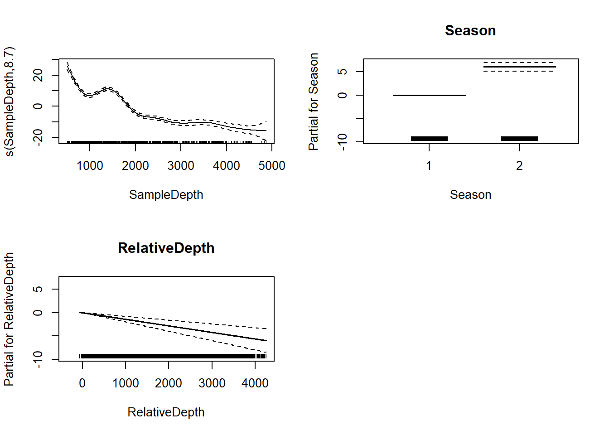
two_smooth_model <- gam(Sources ~ Season + s(SampleDepth) + s(RelativeDepth),
data = isit, method = "REML")
two_smooth_summary <- summary(two_smooth_model)two_smooth_summary$p.table## Estimate Std. Error t value Pr(>|t|)
## (Intercept) 7.937755 0.3452945 22.98836 1.888513e-89
## Season2 4.963951 0.4782280 10.37988 1.029016e-23Now we’ve added another term to the s table.
two_smooth_summary$s.table## edf Ref.df F p-value
## s(SampleDepth) 8.752103 8.973459 150.37263 0
## s(RelativeDepth) 8.044197 8.749580 19.97476 0par(mfrow = c(2, 2))
plot(two_smooth_model, page = 1, all.terms = TRUE)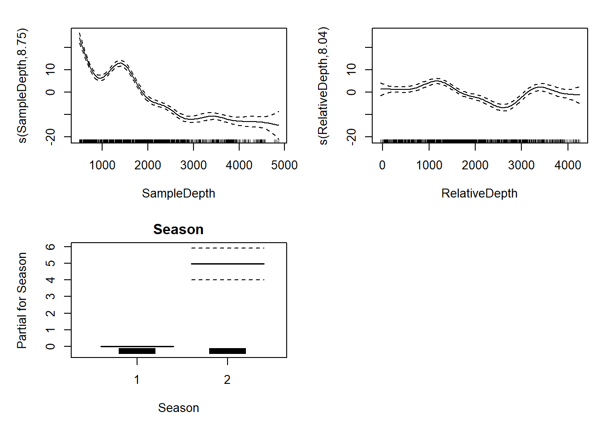
AIC(basic_model, two_term_model, two_smooth_model)## df AIC
## basic_model 11.83374 5208.713
## two_term_model 12.82932 5188.780
## two_smooth_model 20.46960 5056.841Add one more smooth and one more linear predictor to the model. Interpret the results using the p.table and s.table.
We can have interactions between two smooth variables or between a smoothed variable and a linear variable.
First, we’ll create a model with an interaction between one smooth
and one non-smooth factor variable to see if the effect of Sample Depth
varies by season. We’ll use the syntax s(x1, by= x2).
factor_interact <- gam(Sources ~ Season + s(SampleDepth, by = Season), data = isit, method = "REML")
summary(factor_interact)$s.table## edf Ref.df F p-value
## s(SampleDepth):Season1 6.765220 7.523671 123.3087 0
## s(SampleDepth):Season2 8.792384 8.987669 201.2435 0par(mfrow = c(1, 2))
plot(factor_interact)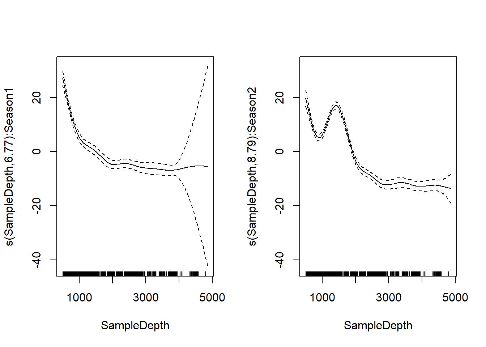
First chart shows effect of sample depth in season 1, second chart shows
effect of sample depth in season 2. There’s an increase in
bioluminescence between 1000 and 2000 feet in season 2, but not in
season 1.
We can also visualize the interaction in 3D using
vis.gam()
vis.gam(factor_interact, theta = 120, n.grid = 50, lwd = 0.4)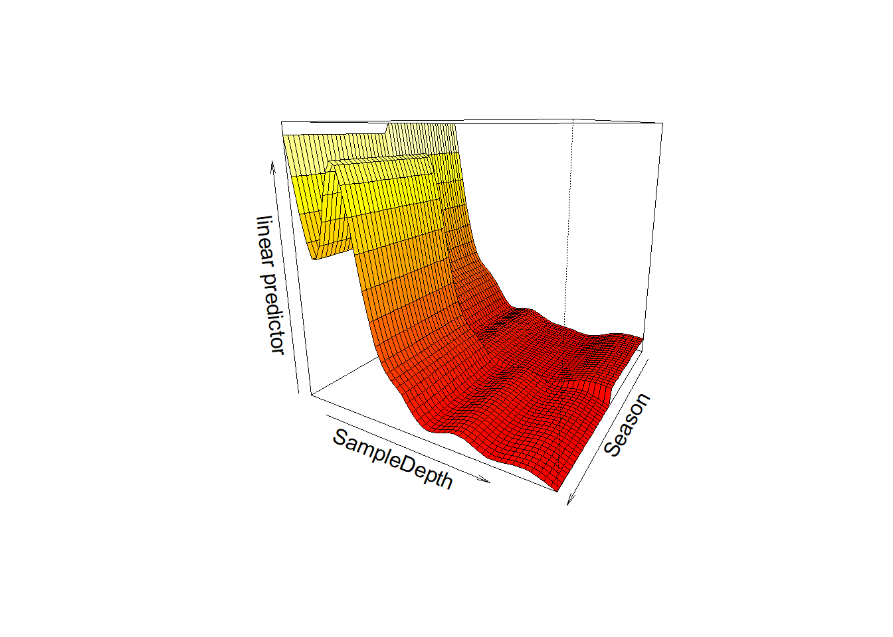
Now, we can include an interaction between two smoothed terms using
the syntax s(x1, x2).
smooth_interact <- gam(Sources ~ Season + s(SampleDepth, RelativeDepth),
data = isit, method = "REML")
summary(smooth_interact)$s.table## edf Ref.df F p-value
## s(SampleDepth,RelativeDepth) 27.12521 28.77 93.91722 0It’s harder to visualize these interactions. When we plot it, we get a gradient between the two continuous smooth functions.
plot(smooth_interact, page = 1, scheme = 2)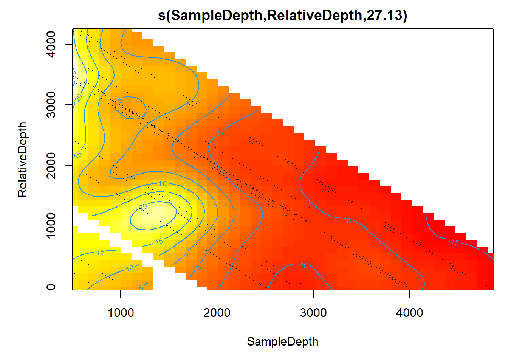
This is easier to see in 3D:
vis.gam(smooth_interact, view = c("SampleDepth", "RelativeDepth"),
theta = 50, n.grid = 50, lwd = 0.4)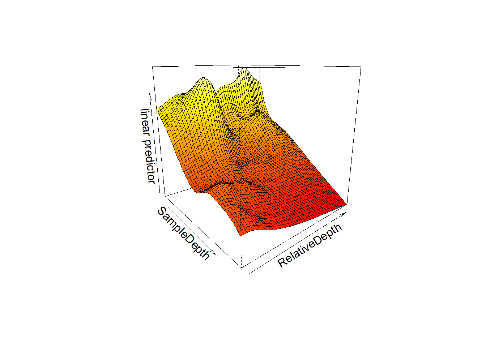
We can see that bioluminescenese increases more sharply with sample depth at higher relative depths than at lower ones.
Once again, we can compare our models with AIC.
AIC(two_smooth_model, factor_interact, smooth_interact)## df AIC
## two_smooth_model 20.46960 5056.841
## factor_interact 19.09278 4925.120
## smooth_interact 30.33625 4943.890Even though GAMs are able to fit non-linear relationships, we still need to check other assumptions of linear models, like normality of residuals and homoscedasticity.
Let’s look at our smooth interaction model again.
smooth_interact <- gam(Sources ~ Season + s(SampleDepth, RelativeDepth),
data = isit, method = "REML")
summary(smooth_interact)$s.table## edf Ref.df F p-value
## s(SampleDepth,RelativeDepth) 27.12521 28.77 93.91722 0As a reminder, EDF is the effective degrees of freedom in the model, a measure of the amount of wiggliness. The maximum degrees of freedom is set using the k term, which we can manually adjust. A larger k allows for more wiggliness.
Here are three versions of our basic SampleDepth model with three different values for k.
par(mfrow=c(1, 3))
plot(gam(Sources ~ s(SampleDepth, k=4), bs = 'tp', method = "REML", data = isit2))
title(main="k=4")
plot(gam(Sources ~ s(SampleDepth, k=6), bs = 'tp', method = "REML", data = isit2))
title(main="k=6")
plot(gam(Sources ~ s(SampleDepth, k=10), bs = 'tp', method = "REML", data = isit2))
title(main="k=10")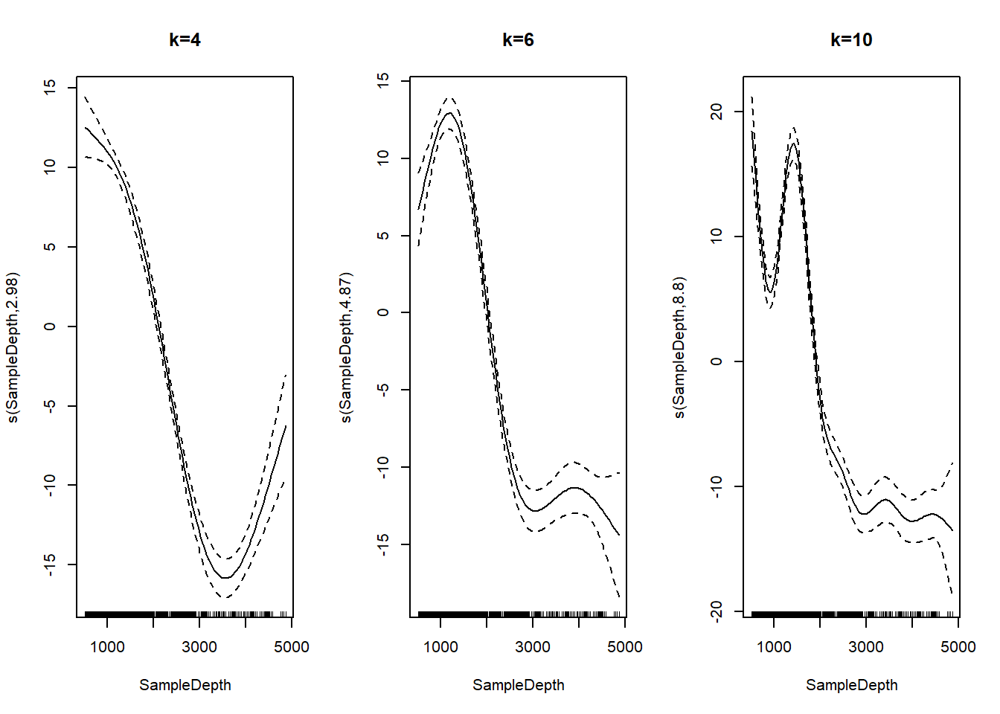
mgcv has a built in function for testing if the model
was using the correct k value.
k.check(smooth_interact)## k' edf k-index p-value
## s(SampleDepth,RelativeDepth) 29 27.12521 0.9448883 0.0625This table includes four columns: k, the EDF, the k-index, and the p-value. The k-index is a ratio of residual error that should be greater than 1. The p value is for the test, not the model term, and we want it to be high. We also want the k to be a good amount higher than the EDF so that we are not overly restricting the model. Here, the EDF is very close to k, the k-index is less than 1, and the p value is under 0.05. All of these measures indicate that the k is too low in the model.
The usual practice to respond to an improper k is to double it and refit the model.
We can refit the model with a k of 60 and then do the
k.check again.
smooth_interact_k60 <- gam(Sources ~ Season + s(SampleDepth,
RelativeDepth, k = 60), data = isit, method = "REML")
k.check(smooth_interact_k60)## k' edf k-index p-value
## s(SampleDepth,RelativeDepth) 59 46.03868 1.048626 0.8675Now the EDF is much smaller than k, which means we aren’t overly constraining its wiggliness. We also now have a k-index greater than 1 and a high p-value.
The next test we should perform on our model is whether it actually follows a normal distribution. (Kevin probably would have done this at the beginning, but this is the order from the code demo we found.)
We can use gam.check() to plot our residuals.
par(mfrow = c(2, 2))
gam.check(smooth_interact_k60)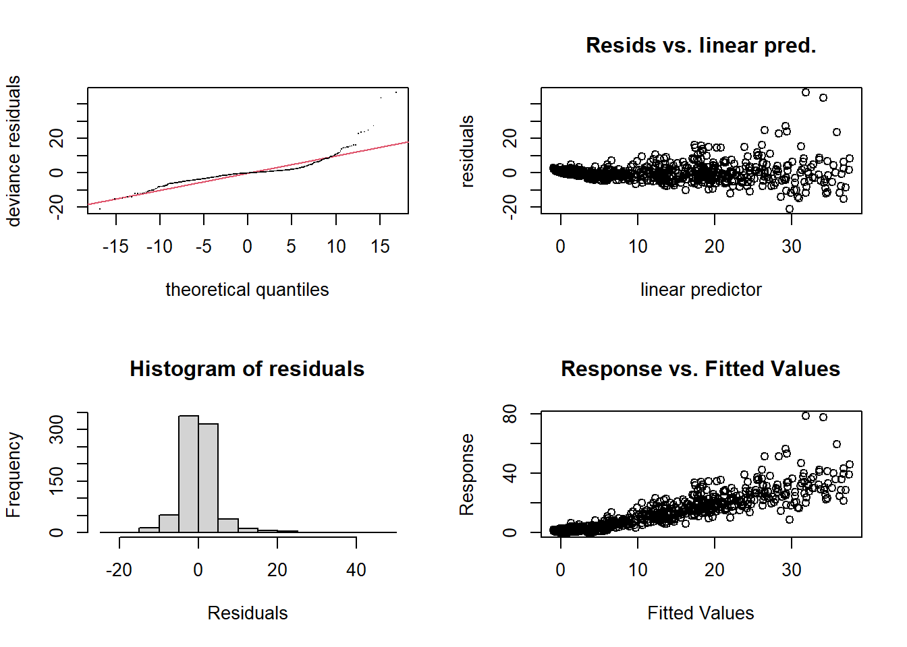
##
## Method: REML Optimizer: outer newton
## full convergence after 4 iterations.
## Gradient range [-0.0005267781,0.0001620713]
## (score 2487.848 & scale 27.40287).
## Hessian positive definite, eigenvalue range [15.84516,393.7878].
## Model rank = 61 / 61
##
## Basis dimension (k) checking results. Low p-value (k-index<1) may
## indicate that k is too low, especially if edf is close to k'.
##
## k' edf k-index p-value
## s(SampleDepth,RelativeDepth) 59 46 1.05 0.88gam.check() also gives us the k test output and tells us
how to interpret it!
We can see from our residuals plots that the variance is heteroscedastic and that we have some strong outliers. We can address this by incorporating non-normal distributions into our model.
We so far have been creating Gaussian additive models, which are the simplest form. But we can generalize them for other distributions, just like with GLMs.
We need a probability function which allows the variance to increase with the mean. So gaussian distribution is probably no longer what we are looking for. We can search the help documentation for other distribution families utilizing the following line of code:
'?'(family.mgcv)Using the help documentation that we’ve provided above, and the code below, we want you to recreate our smooth model with a Tweedie distribution that allows variance to increase with the mean. Notice the default family is specified by family=gaussian(). We want you to change this part of the model to the Tweedie family and use the link = argument within the Tweedie family to test different “links” for this family and find one that you like for fitting our data. Separately, change the k to 100. Interpret the summary table, then do a k-check and a gam.check on the new model and interpret the results. Are we now meeting the assumptions set by our model?
smooth_interact_k100 <- gam(Sources ~ Season + s(SampleDepth, RelativeDepth, k = 60), family=gaussian(), data = isit, method = "REML")
summary(smooth_interact_k100)##
## Family: gaussian
## Link function: identity
##
## Formula:
## Sources ~ Season + s(SampleDepth, RelativeDepth, k = 60)
##
## Parametric coefficients:
## Estimate Std. Error t value Pr(>|t|)
## (Intercept) 8.1295 0.4178 19.46 < 2e-16 ***
## Season2 4.6300 0.6512 7.11 2.74e-12 ***
## ---
## Signif. codes: 0 '***' 0.001 '**' 0.01 '*' 0.05 '.' 0.1 ' ' 1
##
## Approximate significance of smooth terms:
## edf Ref.df F p-value
## s(SampleDepth,RelativeDepth) 46.04 54.21 55.2 <2e-16 ***
## ---
## Signif. codes: 0 '***' 0.001 '**' 0.01 '*' 0.05 '.' 0.1 ' ' 1
##
## R-sq.(adj) = 0.801 Deviance explained = 81.3%
## -REML = 2487.8 Scale est. = 27.403 n = 789